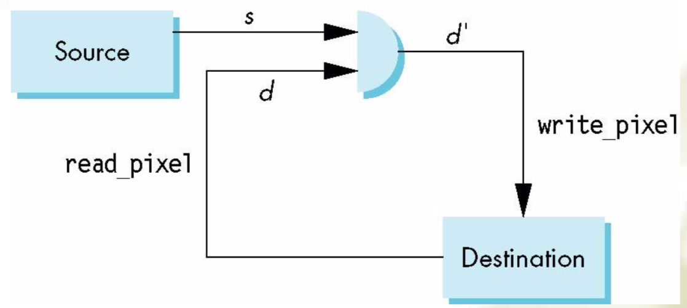
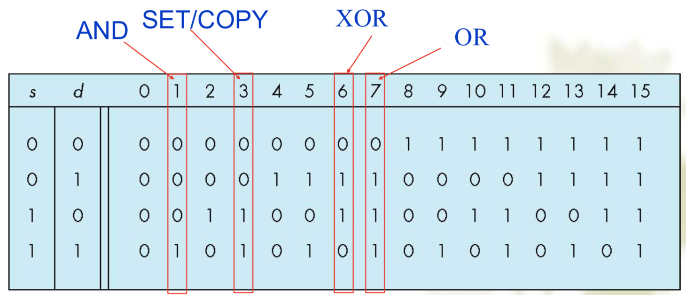
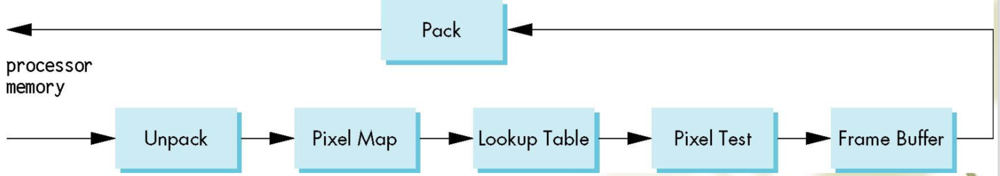
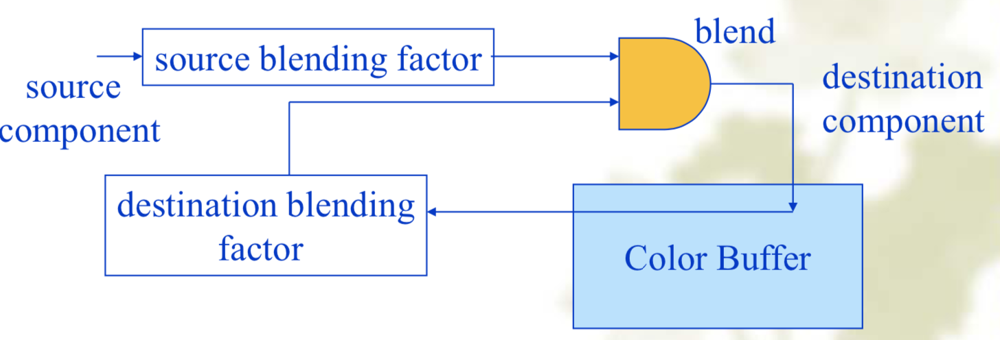

计算机图形学（七）Discrete Techniques
- Uses of Texturing
- Simulating materials
- Reducing Geometric Complexity
1. Buffer in OpenGL
- Define a buffer: spatial resolution $(n\times m)$ and its depth (or precision) $k$, the number of bits/pixel
- OpenGL Frame Bufferes: Back buffer, Front buffer
- OpenGL Buffers
- Color buffers: Front, Back, Auxiliary 辅助, Stereo 立体
- Depth
- Stencil: Holds masks
- Most RGBA buffers 8 bits per component
- Latest are floating point (IEEE)
2. Writing in Buffers
The frame buffer is part of this memory
Writing Model
- read desrination pixel before writing source

Bit Writing Modes
- Source and destination bits are combined bitwise
- $s$, $d$, 从小到大, 16 possible function(
glLoicOp(mode); --default:mode=GL_COPY)

XOR Mode
- XOR is especially useful for swapping blocks of memory such as menus that are stored off screen
- $S$ represents screen and $M$ represents a menu the sequence
- $S\leftarrow S\oplus M$; $M\leftarrow S\oplus M$; $S\leftarrow M\oplus M$
- Swaps the $S$ and $M$
The Pixel Pipeline
- OpenGL has a separate pipeline for pixels

Buffer Selection
- OpenGL can read from any of the buffers (front, back, depth)
- Default to the back buffer, change with
glReadBuffer - format of the pixels in the frame buffer is different from that of processor memory and these two types of memory reside in different places
- Need packing and unpacking
- Reading can be slow
- Drawing through texture function
OpenGL Pixel Functions
glReadPixels(x,t,width,height,format,type, myimage)- eg.
glReadPixells(0,0,512,512,GL_RGB,GL_UNSIGNED_BYTE,myimage)
Deprecated Functionality
- Replace by use of texture functionality, glBltFrameBuffer, frame buffer objects
- GPUs now include a large amount of texture memory that we can write into
- Advantage: fast (not under control of window system)
3. Mapping Methods
- 3 Types
- Texture Mapping
- Uses images to fill inside of polygons
- Environment (reflection mapping)
- Uses a picture of the environment for texture maps
- Allows simulation of highly specular surfaces
- Bump mapping
- Emulates altering normal vectors during the rendering process
- to process each fragment independently with a fragment shader
- Texture Mapping
- Where does mapping take place
- Mapping techniques are implemented at the end of the rendering pipeline
- Very efficient because few polygons make it past the clipper
- Coordinate Systems
- Parametric coordinates
- May be used to model curves and surfaces
- Texture coordinates
- Used to identify points in the image to be mapped
- Object or World Coordinates
- Conceptually, where the mapping takes place
- Window Corrdinates
- Where the final image is really produces
- Parametric coordinates
- Mapping
- Backward Mapping
- $s=s(x,y,z)$; $t=t(x,y,z)$
- Two-part Mapping
- first map the texture to a simple intermediate surface
- Cylindrical Mapping
- Sherical Map
- Box Map
- Backward Mapping
4. Texture Mapping in OpenGL
- 3 steps to applying a texture
- specify the texture
- Assign texture coordinates to vertices
- specify texture parameters
- Specify the Texture
Glubyte my_texels[512][512]glEnable(GL_TEXTURE_2D)- Define Image as a Texture
glTexImage2D(target,level,components,w,h,border,format,type,texels)- format: 是否使用平滑
- eg.
glTexImage2D(GL_TEXTURE_2D,0,3,512,512,0,GL_RGB,GL_UNSIGNED_BYTE,my_texels)
- Maping a Texture
glTexCoord*()specified at each vertex
- Parameter of Texture Mapping
- Interpolation:
glHint(GL_PERSPECTIVE_CORRECTION_HIT,hint)GL_DONT_CARE(default),GL_NICEST,GL_FASTNEST(don’t perform the perspective correction to maximize speed)
- OpenGL has a variety of parameters that determine how texture is applied
- Wrapping Mode: determine what happpens if $s$ and $t$ are outside the $(0,1)$ range
glTexParameteri(GL_TEXTURE_2D,GL_TEXTURE_WRAP_S,GL_CLAMP_TO_EDGE)glTexParameteri(GL_TEXTURE_2D,GL_TEXTURE_WRAP_T,GL_CLAMP_REPEAT)
- Filter Mode: allow us to use area averageing instead of point samples
- More than one texel can cover a pixel (minification) or more than one pixel can cover a texel (magnification)
glTexParameteri(GL_TEXTURE,GL_TEXTURE_MAG_FILTER,GL_NEAREST)glTexParameteri(GL_TEXTURE,GL_TEXTURE_MIN_FILTER,GL_LINEAR)
- Mipmapping: allow us to use textures at multiple resolutions，处理纹理缩小的问题
- Mipmapping allows for prefiltered texture maps of decreasing resolutions
- Lessens interpolation errors for smaller textured objects
glGenerateMipMap(GL_TEXTURE_2D)glTexParameteri(GL_TEXTURE_2D,GL_TEXTURE_MIN_FILTER,GL_NEAREST_MIPMAP_NEAREST)- point sampling, linear filtering, mipmapped point sampling, mipped linear filtering
- Environment parameters: determine how texture mapping interacts with shading
- Wrapping Mode: determine what happpens if $s$ and $t$ are outside the $(0,1)$ range
- Interpolation:
5. Texture Objects in OpenGL
Texture Object
GLuint textures[1]; glEnable(GL_TEXTURE_2D); //open texture computing glGenTextures(1, texName); // generates a texture name glBindTexture(GL_TEXTURE_2D,texName[0]); // Create texture objects with texture data and state glTexParameteri(GL_TEXTURE_2D,GL_TEXTURE_WRAP_S,GL_CLAMP_TO_EDGE); glTexParameteri(GL_TEXTURE_2D,GL_TEXTURE_WRAP_T,GL_REPEAT); //texture parameters glTexParameteri(GL_TEXTURE_2D,GL_TEXTURE_MIN_FILTER,GL_LINEAR); glTexParameteri(GL_TEXTURE_2D,GL_TEXTURE_MAG_FILTER,GL_LINEAR); //Define a texture image from an array of texels in CPU memory glTexImage2D(GL_TEXTURE_2D,0,GL_RGB,TEX_WIDTH,TEX_HEIGHT, 0, GL_RGB, GL_UNSIGNED_BYTE, texImage); glActiveTexture( GL_TEXTURE0 );Linking with Shader
Applying Textures
- sampler
in vec4 color; //color from rasterizer in vec2 texCoord; //texure coordinate from rasterizer uniform sampler2D texture; //texture object from application void main() { gl_FragColor = color * texture2D( texture, texCoord ); }Mirror image
glTexParameteri(GL_TEXTURE_ 2D,GL_TEXTURE_WRAP_S,GL_MIR RORED_REPEAT); glTexParameteri(GL_TEXTURE_ 2D,GL_TEXTURE_WRAP_S,GL_MIR RORED_REPEAT); glTexParameteri(GL_TEXTURE_ 2D,GL_TEXTURE_WRAP_T,GL_MIR RORED_REPEAT);
6. The Example of Texture
- OpenGL new version can read texture depth with GL_DEPTH_STENCIL
7. Blend Model 合成技术
- Use A component of RGBA color to store opacity

Draw partially transparent faces
glEnable(GL_DEPTH_TEST) //Draw all opacity glEnable(GL_BLEND) glDepthMask(GL_FALSE) //depth only read glBlendFunc(GL_SRC_ALPHA, GL_ONE) //Draw all transparence from back to front //compare depth but not write to depth, blending with opacity glDepthMask(GL_TRUE) glDisable(GL_BLEND)Billboard
- A billboard is a plane object (usually simple, like a rectangle) on which an image is texture mapped
- The image often includes zero-alpha areas so they can be “seen through”
- The object is rotated to face the viewer so that the viewer sees the image in 3D space, simulating a full 3D object